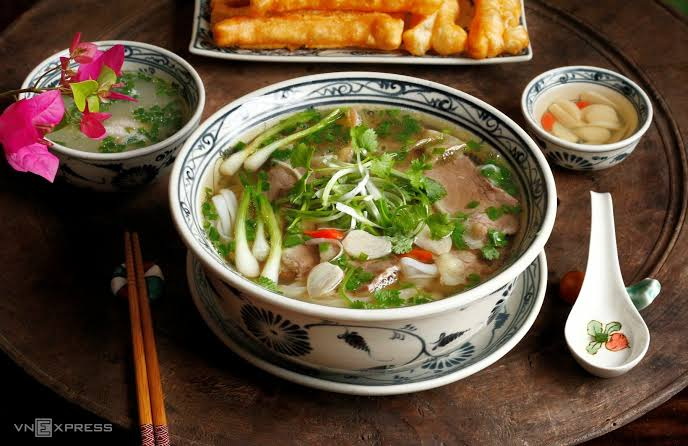
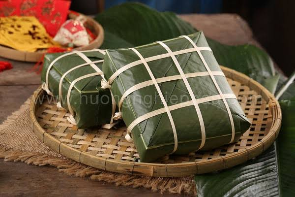
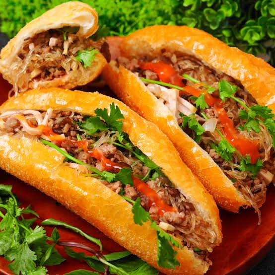
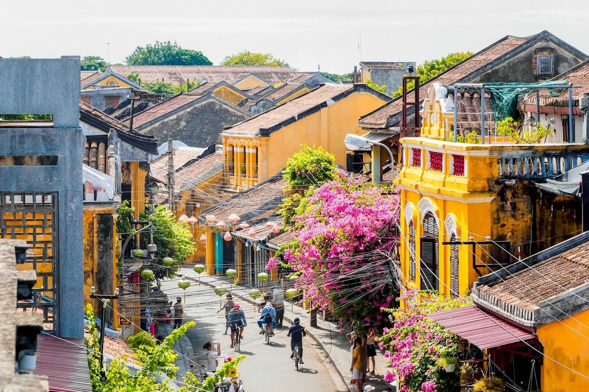
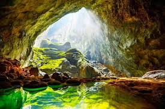
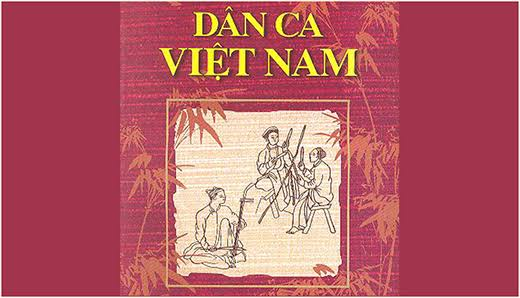
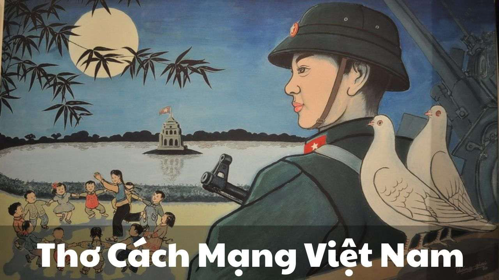

Tinh Hoa Ẩm Thực Việt Nam

1. Phở Truyền Thống
Đại diện tinh hoa ẩm thực Việt Nam với nước dùng xương ninh trong vắt, thơm lừng hương thảo mộc và bánh phở mềm dai.
Ấn vào để xem Nguồn gốc, Hương vị & Cách nấu Phở →

2. Bánh Chưng
Món bánh cổ truyền tượng trưng cho mặt đất từ thời Vua Hùng, gói trọn vị dẻo thơm của gạo nếp, đậu xanh, thịt mỡ trong lá dong xanh.
Ấn vào để xem Nguồn gốc, Hương vị & Cách gói Bánh Chưng →

3. Bánh Mì Việt Nam
Món ăn đường phố nổi tiếng toàn cầu với vỏ bánh nướng giòn rụm kẹp nhân pate, thịt nguội, đồ chua và rau thơm đậm đà.
Ấn vào để xem Nguồn gốc, Hương vị & Cách làm Bánh mì →
Danh Lam Thắng Cảnh Du Lịch Việt Nam

1. Vịnh Hạ Long
Di sản thiên nhiên thế giới tại Quảng Ninh với gần 2.000 hòn đảo đá vôi kỳ vĩ trên mặt biển xanh ngọc bích.
Ấn vào để xem Vị trí, Cảnh sắc & Trải nghiệm Vịnh Hạ Long →

2. Phố Cổ Hội An
Thương cảng cổ kính bên bờ sông Hoài nổi bật với những dãy nhà tường vàng, mái ngói rêu phong và phố đèn lồng rực rỡ.
Ấn vào để xem Lịch sử hình thành, Kiến trúc & Trải nghiệm Hội An →

3. Hang Sơn Đoòng
Hang động tự nhiên lớn nhất thế giới tại Quảng Bình sở hữu hệ sinh thái rừng nguyên sinh và sông ngầm độc đáo ngay trong lòng đất.
Ấn vào để xem Quá trình phát hiện, Kỳ quan & Thám hiểm Sơn Đoòng →
Lịch Sử Và Văn Hóa Truyền Thống Việt Nam
1. Lịch Sử Giữ Nước Của Dân Tộc
Trang sử hào hùng suốt hơn 4.000 năm từ chiến thắng Bạch Đằng, Chi Lăng, Đống Đa đến Điện Biên Phủ và Đại thắng mùa Xuân 1975.
Ấn vào để xem Các mốc son lịch sử & Truyền thống yêu nước →

2. Nhạc Dân Ca Việt Nam
Kho tàng làn điệu dân ca Quan họ Bắc Ninh, Hát Xoan, Ví Giặm Nghệ Tĩnh và Đờn ca tài tử Nam Bộ thấm đượm tình quê hương.
Ấn vào để xem Nguồn gốc, Các làn điệu tiêu biểu & Giá trị di sản →

3. Thơ Ca Cách Mạng Việt Nam
Dòng văn học hào sảng đồng hành cùng dân tộc trong hai cuộc kháng chiến với những vần thơ bất hủ của Hồ Chí Minh, Tố Hữu, Chính Hữu, Phạm Tiến Duật.
Ấn vào để xem Bối cảnh ra đời, Tác phẩm tiêu biểu & Ý nghĩa →